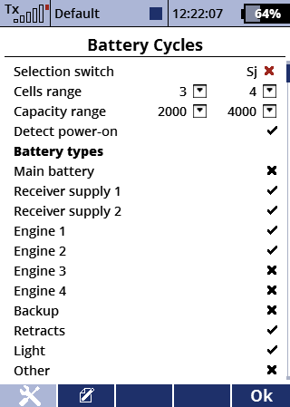

Akkuzyklen
Zählt die modellübergreifenden Ladezyklen der Akkus. Mehrere Akkus je Modell sind möglich.
Der folgende Auswahldialog kann automatisch beim Einschalten des Modells angezeigt werden und auch manuell über einen Schalter.
Hauptseite
- Auswahlschalter: mit diesem Schalter kann der Auswahldialog manuell angezeigt werden
- Zellen- und Kapazitätsbereich: modellspezifische Filterwerte, um die Anzahl der auswählbaren Akkus zu verringern
- Automatischer Auswahldialog: wenn dieses ausgewählt ist und das Modell eingeschaltet wird, öffnet sich der Auswahldialog automatisch
- Akkutypen: Auswahl der Akkutypen, die im gewählten Modell vorkommen. Nur die ausgewählten Kategorien werden später abgefragt.

Liste der Akkus
- F1 öffnet die Hauptseite
- Akkus können hinzugefügt, gelöscht und in der Reihenfolge geändert werden
- klicke auf einen Akku, um dessen Attribute anzupassen
Auswahldialog
Der Auswahldialog zeigt eine Liste von Akkus. Für jeden Einsatzbereich (gekennzeichnet durch den Titel) kann ein Akku ausgewählt werden. Dann geht der Dialog zum nächsten Typ weiter.
- +/-: die Zyklenanzahl des fokussierten Akkus kann manuell angepasst werden, wenn zum Beispiel ein falscher Akku gewählt wurde
- F3/F4: geht zum vorherigen Typ/überspringt den aktuellen Typ ohne eine Zyklenerhöhung
- F5/Enter: erhöht die Zyklenanzahl des fokussierten Akkus um eins und geht zum nächsten Einsatzbereich
Quelltexte und weitere Informationen sind in meinem GitHub Repository aufgeführt.
LICENSE